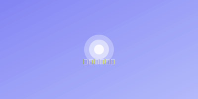

环境准备要求
在开始使用QWQ博客主题之前，请确保你的环境满足以下要求：
- Node.js 14+ / npm 6+
- 现代浏览器（Chrome、Firefox、Safari、Edge等）
- 文本编辑器（VSCode、Sublime Text等）
安装提示
如果你使用的是Windows系统，建议使用WSL或Git Bash来执行命令行操作。
主题安装
QWQ博客主题的安装非常简单，只需要按照以下步骤操作：
- 下载主题文件
- 解压到你的网站根目录
- 修改配置文件
- 部署到你的服务器
如果你使用的是静态网站生成器，可以参考以下代码进行安装：
git clone https://github.com/xiaolin/qwq-blog.git
cd qwq-blog
npm install
npm run build主题配置
QWQ博客主题提供了丰富的配置选项，你可以通过修改config.js文件来自定义你的博客：
// config.js
module.exports = {
// 基本信息
title: 'QWQ博客',
description: '一个简洁、美观的个人博客模板',
author: 'xiaolin',
// 主题配置
theme: {
primaryColor: '#6366f1',
darkMode: true,
animation: true,
fontFamily: 'system-ui, -apple-system, BlinkMacSystemFont, "Segoe UI", Roboto, sans-serif'
},
// 社交媒体链接
social: {
github: 'https://github.com/xiaolin',
twitter: 'https://twitter.com/xiaolin',
weibo: 'https://weibo.com/xiaolin'
}
};注意事项
修改配置文件后，需要重新构建项目才能看到效果。
自定义样式
如果你想进一步自定义主题的样式，可以修改css/custom.css文件：
/* 自定义CSS */
:root {
--primary-color: #6366f1;
--secondary-color: #4f46e5;
--text-color: #333;
--bg-color: #fff;
}
/* 暗色模式 */
.dark-mode {
--text-color: #f3f4f6;
--bg-color: #1f2937;
}常见问题解答
1. 如何添加新文章？
在content/posts目录下创建一个新的Markdown文件，按照以下格式添加文章元数据：
---
title: 文章标题
date: 2023-06-15
category: 前端
tags: [博客, 教程]
---
这里是文章内容...2. 如何自定义导航菜单？
修改config.js文件中的navigation部分：
navigation: [
{ name: '首页', url: '/' },
{ name: '文章', url: '/articles' },
{ name: '关于', url: '/about' },
{ name: '联系', url: '/contact' },
// 添加更多导航项
]3. 如何启用/禁用评论功能？
在config.js文件中配置评论系统：
comments: {
enabled: true,
system: 'disqus', // 'disqus', 'gitalk', 'valine'
disqusShortname: 'your-disqus-shortname',
// 其他评论系统的配置
}提示
QWQ博客主题支持多种评论系统，你可以根据自己的需求选择合适的评论系统。
总结
通过本教程，你应该已经了解了如何安装、配置和自定义QWQ博客主题。如果你在使用过程中遇到任何问题，可以通过以下方式获取帮助：
希望你能喜欢这个主题，祝你使用愉快！
评论 (5)
张三
2023-06-16 10:30非常详细的教程，对我帮助很大！特别是自定义样式的部分，让我能够根据自己的喜好调整主题。
xiaolin
2023-06-16 11:15谢谢你的反馈！很高兴这篇教程对你有帮助。如果你有任何问题，随时可以提出。
李四
2023-06-15 16:45请问这个主题支持响应式设计吗？在移动设备上的表现如何？